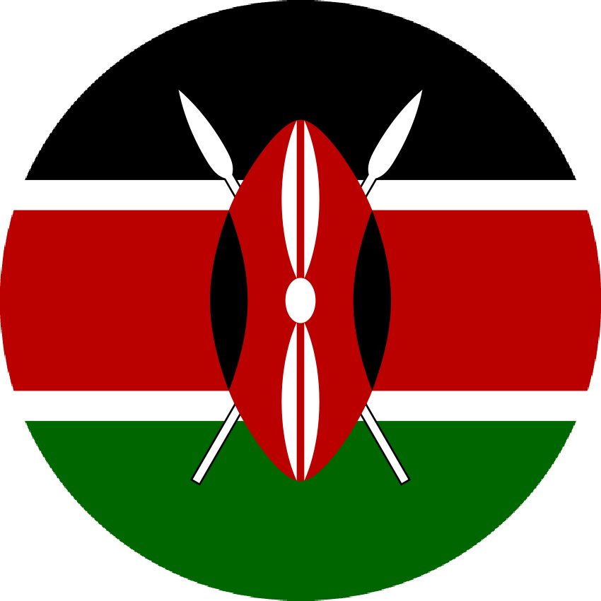
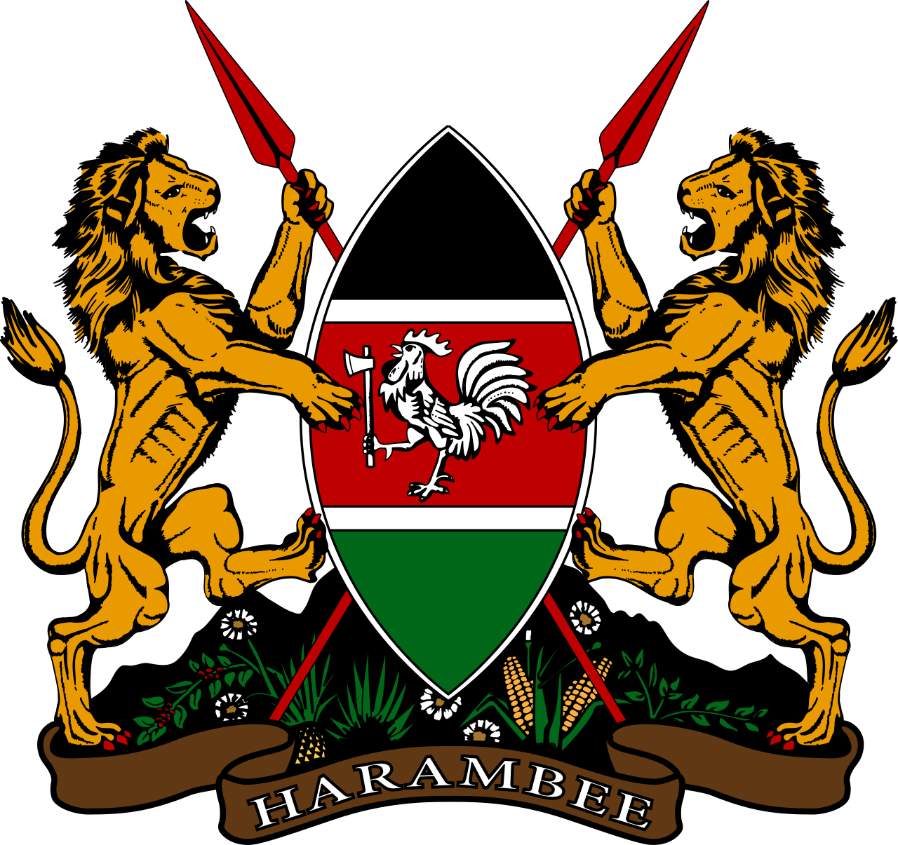
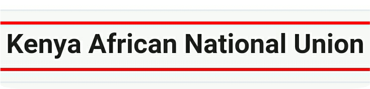
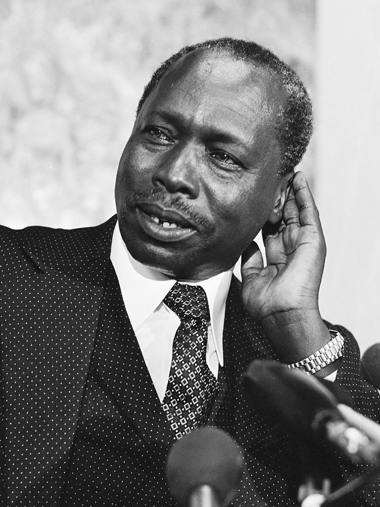
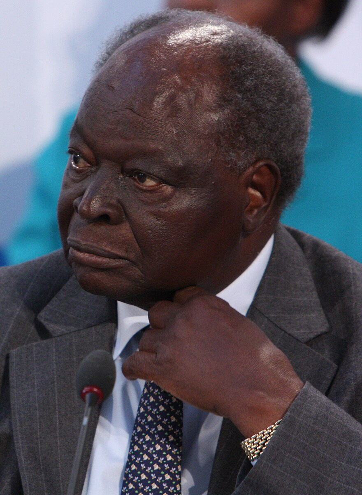
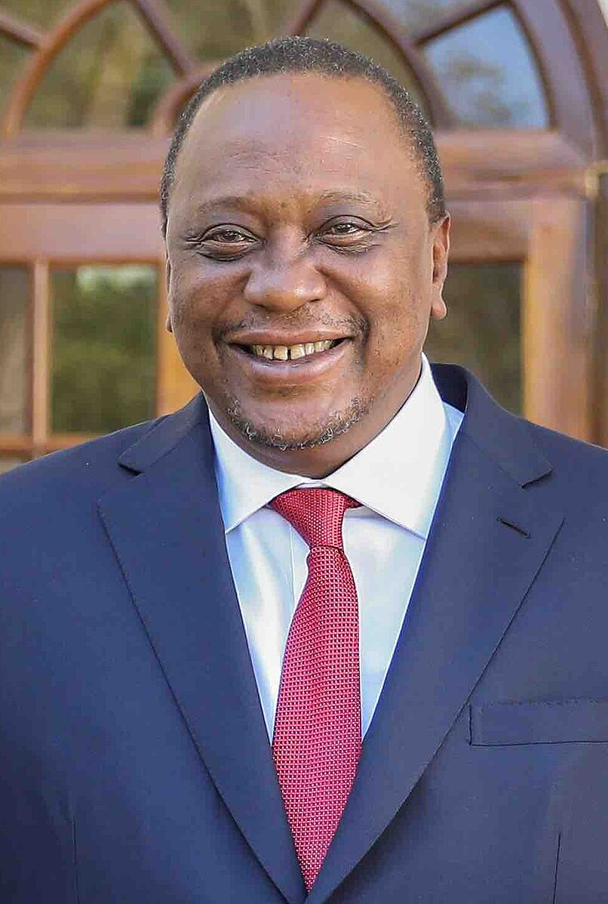
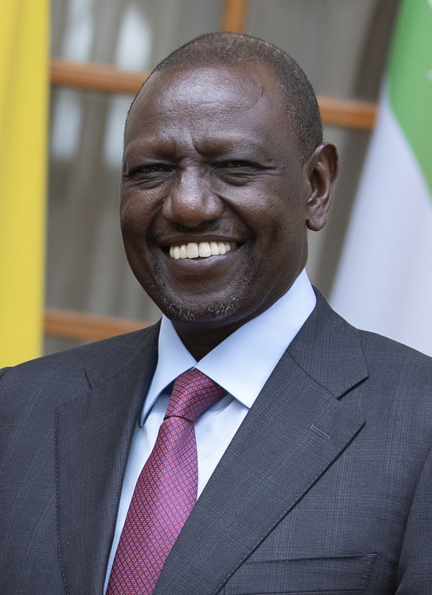
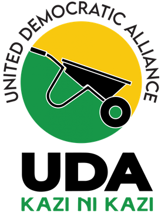

REPUBLIC OF KENYA


"Let us all pull together"
FIRST PRESIDENT


- Jomo Kenyatta
- Political Party: K.A.N.U.
- In Office From: 12 December 1964.
- In Office until: 22 August 1978.
- Born: ?- ?- 1897
- Died: 22 August 1978.
- Aged: 80-81 Years Old.
SECOND PRESIDENT

- Daniel Arap Moi
- Political Party: K.A.N.U.; K.A.D.U.
- In Office From: 2 November 1991.
- In Office Until: 2 January 2002.
- Born: 2 September 1924
- Died: 4 Februery 2020.
- Aged: 95 Years Old.
THIRD PRESIDENT

- Emilio Mwai Kibaki.
- Political Party: P.N.U.
- In Office From: 30 December 2002.
- In Office Until: 9 April 2013.
- Born: 15 November 1931.
- Died: 21 April 2022.
- Aged: 90 Years Old.
FOURTH PRESIDENT

- Uhuru Kenyatta.
- Political Party: Jubilee Party
- In Office From: 9 April 2013.
- In Office Until: 13 September 2022.
- Born: 26 October 1961.
- Aged: 62 Years Old.
FIFTH PRESIDENT


Incumbent President
- William Ruto
- Political Party: U.D.A.
- In Office From: 23 September 2011.
- In Office Until: 28 October 2014.
- Born: 21 December 1966.
- Died: 28 October 2014.
- Aged: 77 years Old.